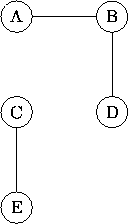

| Graph Connectivity |
Consider a graph G formed from a large number of nodes connected by edges. G is said to be connected if a path can be found in 0 or more steps between any pair of nodes in G. For example, the graph below is not connected because there is no path from A to C.

This graph contains, however, a number of subgraphs that are connected, one for each of the following sets of nodes: {A}, {B}, {C}, {D}, {E}, {A,B}, {B,D}, {C,E}, {A,B,D}
A connected subgraph is maximal if there are no nodes and edges in the original graph that could be added to the subgraph and still leave it connected. There are two maximal connected subgraphs above, one associated with the nodes {A, B, D} and the other with the nodes {C, E}.
Write a program to determine the number of maximal connected subgraphs of a given graph.
The input begins with a single positive integer on a line by itself indicating the number of the cases following, each of them as described below. This line is followed by a blank line, and there is also a blank line between two consecutive inputs.
The first line of each input set contains a single uppercase alphabetic character. This character represents the largest node name in the graph. Each successive line contains a pair of uppercase alphabetic characters denoting an edge in the graph. The sample input section contains a possible input set for the graph pictured above.
Input is terminated by a blank line.
For each test case, the output the number of maximal connected subgraphs. The outputs of two consecutive cases will be separated by a blank line.
1 E AB CE DB EC
2